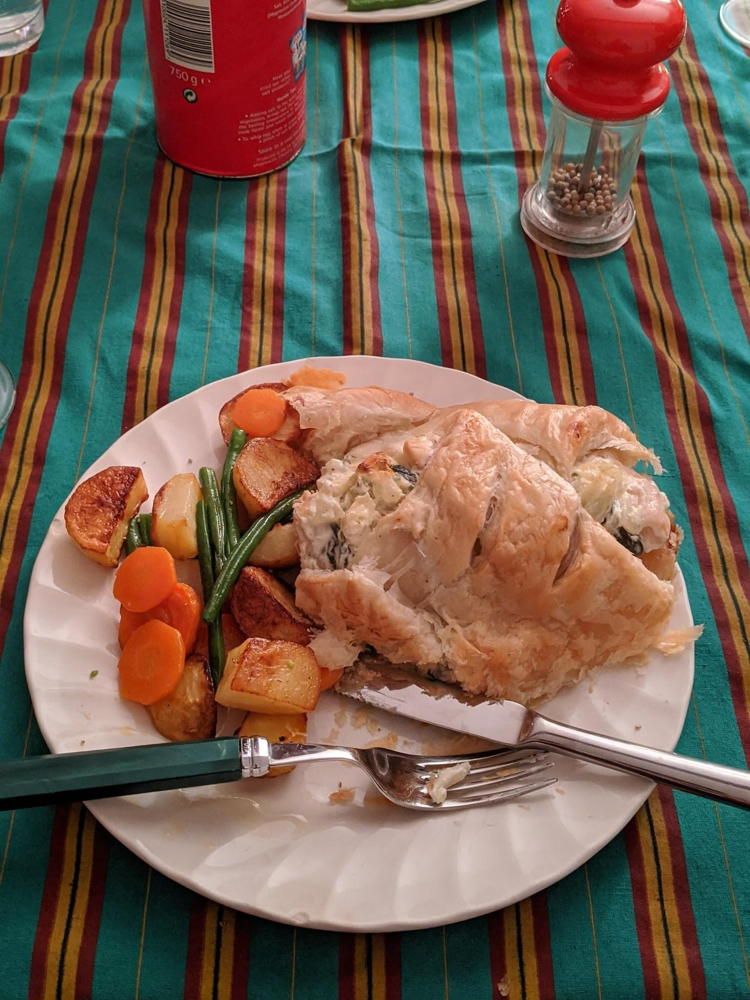

Tom's Salmon Wellington

Before you start heat the oven to 180°C fan.
Ingredients
Method
- Simmer butter in a pan and add the 2 diced white onions.
- Add the 1 large glass of white wine in and cook it off.
- Add the 2 tubs of cream cheese and mix together.
- Add the spinach and season to taste.
- Roll out the 2 rolls of puff pastry (it might need 5 mins out of the fridge to warm slightly) so it is in a landscape orientation.
- Put a strip of the cream cheese sauce down the middle of the pastry from left to right (i.e. lengthways), with a small margin at either end.
- Sit 2 or 3 fillets of salmon along the strip, end to end and add another layer of sauce on top of them.
- Roll up the pastry into a wellie log. One suggested way is to fold each corner of the pastry towards the middle of the pastry (over the salmon) before folding the remaining top and bottom flaps over.
- Cook for 30ish mins at 180°C fan.